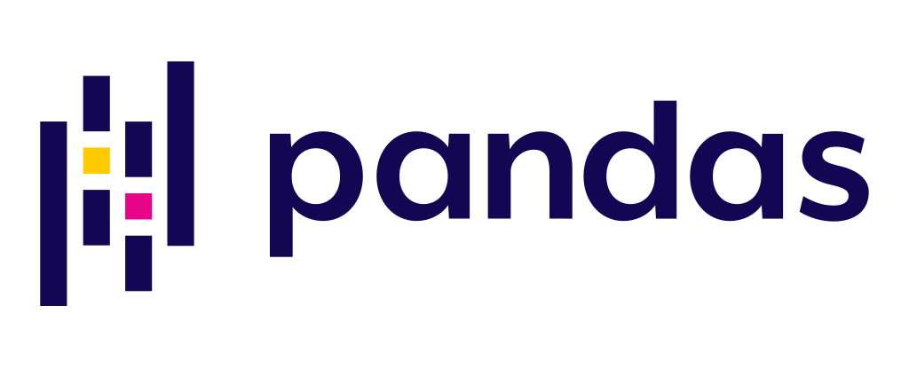
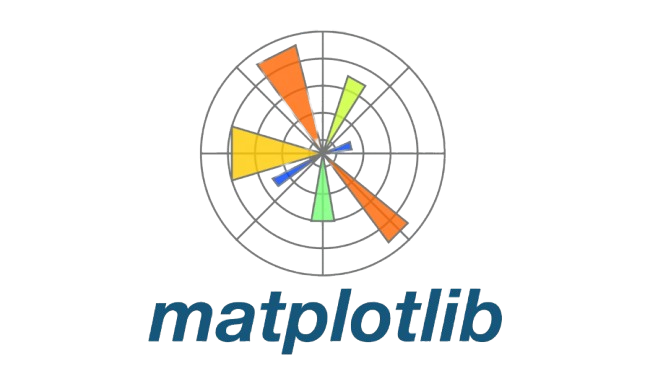
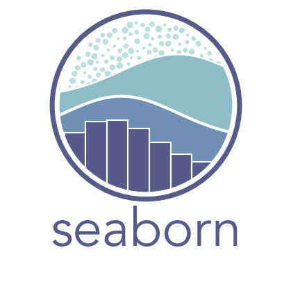
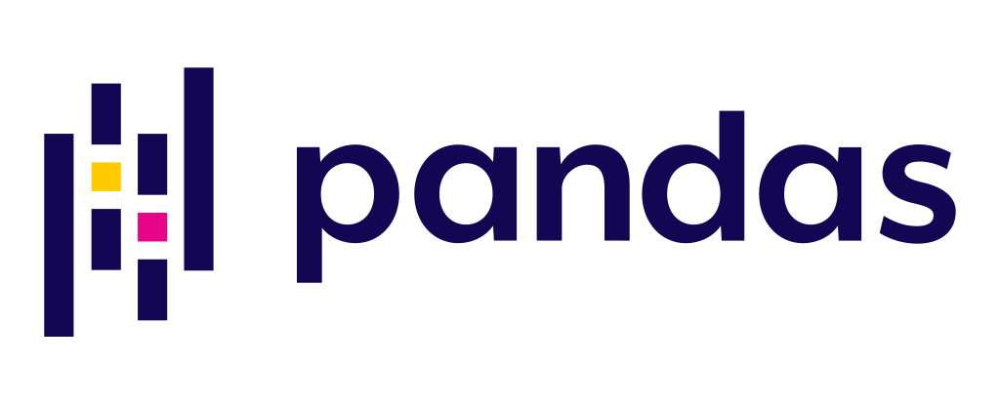
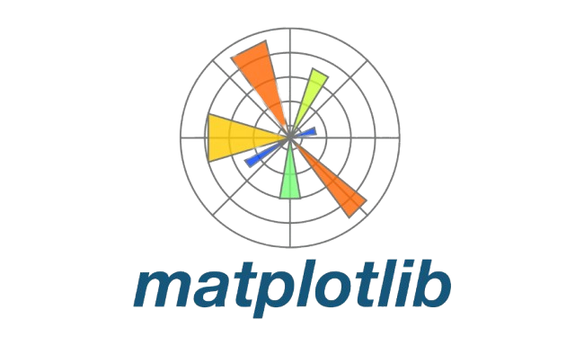
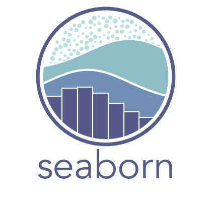

A bit about me
Hello! I’m Balajigowda Hadripura Sureshkumar, a Master of Science in Business Analytics graduate from The George Washington University, having completed my degree in December 2024. With a strong foundation in Mechanical Engineering and proficiency in Python, R, SQL, and Stata, my focus lies in Machine Learning, Deep Learning, and data-driven analytics. I’ve gained hands-on experience with cutting-edge tools like TensorFlow, Sklearn, and AWS, and have applied these skills to meaningful projects across industries such as finance, healthcare, and more, turning complex data into actionable insights.
My professional journey includes roles at FI Consulting, Cognizant, and Fortune Spirits, where I applied my analytical skills to diverse challenges. At FI Consulting, I worked on uncovering biases in lending practices through machine learning models and data analysis. My experience at Cognizant involved developing automated data retrieval systems, improving efficiency in data collection and reporting. At Fortune Spirits, I focused on building interactive dashboards for sales performance, streamlining processes, and enabling data-driven decision-making. These experiences have deepened my passion for using data to solve complex problems, and I am excited to continue making an impact in the field of data science.


 




